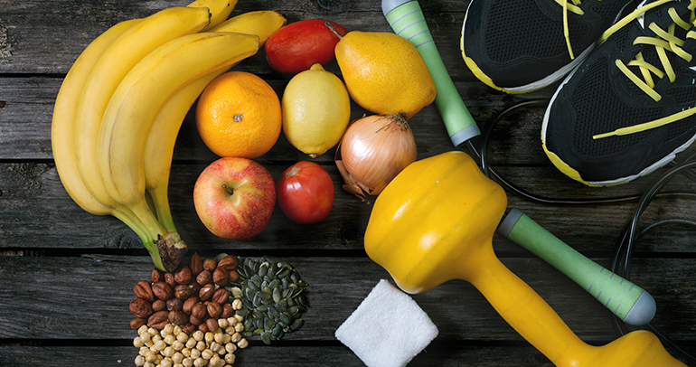

TIPS SALUDABLES
Aquí te mostraremos los consejos que puedes llevar a cabo para una vida sana y equilibrada
Cuidar la alimentación
Es necesario beber más de 2 litros diarios de agua para evitar retener líquidos. Además, el té también es una bebida que se puede añadir a tu dieta diaria cuando no bebas agua. Evitar todo tipo de bebidas azucaradas. Consumir cinco piezas diarias de fruta. La fruta es un alimento básico que debemos tener presente en nuestra deieta. Reducir el uso de sal y el consumo de alimentos con alto contenido de sodio. Para reemplazarla utilizar condimentos de todo tipo (pimienta, perejil, ají, pimentón, orégano). Disminuir el consumo de sal previene la hipertensión, enfermedades vasculares y renales, entre otras. Aumenta el consumo de alimentos que contengan fibra.
Una buena salud digestiva es parte de una vida saludable y, para eso, contamos con un aliado la fibra. Podemos encontrar fibra en alimentos como la fruta, las verduras y las semillas. La fibra de salvado de trigo ayuda el tránsito intestinal y por consiguiente ayuda a la salud digestiva. Por ejemplo, la fibra presente en semillas como el centeno, contribuye al correcto funcionamiento del intestino.
Llevar una vida activa
Uno de los aspectos más importantes para llevar a cabo una vida más sana es alejarte del estrés e intentar dormir 8 horas diarias para renovar energía de la mejor manera posible. Aprende a controlar tu estrés y ansiedad. El sueño ineficiente es causa de sobrepeso, obesidad y estrés.
Caminar durante 30 minutos al día hará que tengamos una vida más activa. También podemos cambiar pequeños gestos en nuestro día a día, como elegir las escaleras antes que el ascensor o ir caminando al trabajo, estos hábitos nos mantendrán alejados del sedentarismo.